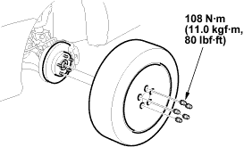
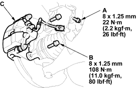
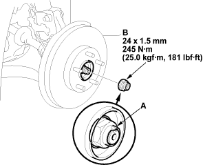
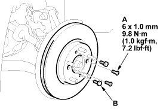

Special Tools Required
- Hub disassembly/assembly tool, 07GAF-SD40100
- Ball joint remover, 28 mm, 07MAC-SL00200
- Attachment 62 x 68 mm, 07746-0010500
- Driver, 07749-0010000
- Support base, 07965-SD90100
- Raise the front of the vehicle and make sure it is securely supported.
- Remove the wheel cap, wheel nuts and front wheel.

- Remove the brake hose bracket mounting bolt (A).

- Remove the caliper bracket mounting bolts (B) and remove the caliper assembly (C) from the knuckle. To prevent damage to the caliper assembly or brake hose, use a short piece of wire to hang the caliper assembly from the undercarriage. Do not twist the brake hose with force.

- Raise the stake (A) and remove the spindle nut (B).

- Remove the brake disc retaining flat screws (A).

- Screw two 8 x 1.25 mm bolts (B) into the disc to push it away from the hub. Turn each bolt two turns at a time to prevent cocking the disc excessively.